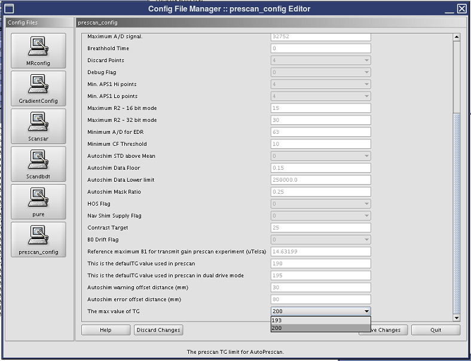

- 00000018WIA30231E20GYZ
- id_131060552.6
- Jan 21, 2021 2:02:35 PM
Troubleshooting RF amplifier peak power trips
Overview
This document applies to MR450 and MR450w systems.
The present 1.5T RF amplifiers are designed to stop transmitting, which in turn will stop a scan, due to a peak power trip when the output exceeds 17.8 kW in order to protect the hardware from damage. There are two types of amplifiers in the field which are being affected by this failure:
- SRFD2 (air cooled) failing with error code 2254212:
“SRFD2 RF Amplifier Peak Power Fault. Peak power from RF Amplifier exceeds specification (72.5 dBm). Possible causes: the PSD exceeds system limits, RF Gain mis-calibration, defective Exciter, or defective RF Amplifier.”
- 8120 (water cooled) failing with error code 101257:
“RF Amplifier Peak Forward Power Fault (BODY mode). Peak forward power exceeds threshold. Possible causes: PSD exceeds system limits, RF input to amplifier exceeds limits. Load VSWR is out of range. Peak power: %d watts, Upper spec: %d watts.”
For early software releases such as DV23 and DV22, the occurrences of these errors were somewhat rare. This was attributed to the majority of scans being below TG 200 (16 kW) which allowed for tolerance stack up errors due to calibration equipment and system deviations due to the imperfect loading of the body coil.
For DV24 and later, a new TG process was employed, making prescan more accurate but requiring up to 10 TG counts more than the previous software releases, which can lead to more peak power trips. Approximately 30% to 40% of MR450 and MR450W sites with DV24_R01 software experienced a noticeable increase in peak power trips.
Procedure
There are two options for determining if a site is experiencing excessive peak power trips.
- Scenario 1: Site has been up and running. See Check for peak power trips at existing site.
- Scenario 2: New installation. Determine if peak power trips will occur. See Determine potential for peak power trips at new installation.
Check for peak power trips at existing site
If the customer is complaining about peak power trips, review the error logs for peak power trip messages shown above. If these errors are not present, there is another issue which must be addressed. If trip errors are present, continue with Correcting excessive peak power trips.
Determine potential for peak power trips at new installation
Be sure the FE service key is installed in the system.
- Do RF body output calibration and functional check (UPM Calibration and UPM Functional Check - Body Mode).
Did any peak RF power trips occur during the calibration that could not be resolved by properly adjusting the amplifier gain?
Yes See Correcting excessive peak power trips. No Continue with the next step. - With system in normal clinical scanning configuration, test for peak power trips by positioning the short body loader in the center of the bore and pulsing the system while increasing TG to 200. Test this by doing a test scan as follows:
- Set up the short loader at the S/I center of the cradle and landmark. Make sure the LPCA is out of the FOV for this test initially. (Later, you can try setting up the loader in different locations to see if any landmarks are more sensitive than others.)
- Start a new exam.
- Set Patient ID to geservice and Weight to 300 lb (136.08 kg).
- Set the Protocol Library to Service.
- Open apbcal folder, select Body Scan, Cal: RF Cabinet protocol. Select the center arrow button to transfer the protocol to the Multi Protocol Basket window on the right.
- Highlight Body Scan, Cal: RF Cabinet. At the bottom of the window, select Accept.
- Select Start Exam, then select Save Rx.
- To the right of the Scan button, select the arrow. From the pull-down menu, select Research > Display CVs.
- Change CV Name to calmode, and change Current Value to 5. At the bottom of the window, select Accept. (This will play out a series of full power sync pulses at the given TG.)
-
From the Scan arrow menu, select Research > Download.
- From the Scan arrow menu, select Manual Prescan.
- On the Manual Prescan screen, select Scan TR (R1/R2).
- Slowly advance the Transmit Gain (TG) slide control to 200. Allow the system to pulse at TG=200 for 3 minutes.
If a peak power trip occurs, make note of the TG setting that causes the trip.
- Did any peak RF power trips occur? If so, repeat the above test and stop at TG=193.
Yes, trip at 200 See Correcting excessive peak power trips. Yes, trip at 193 See Additional troubleshooting. No Confirm that max TG is set to 200. See Set maximum prescan TG value.
Correcting excessive peak power trips
If trips have been confirmed, do the following:
- Do a visual inspection of the body coil/end ring gaps to confirm they are uniform, indicating no shift or tilt of the coil. Also, confirm the bridge is not in physical contact with the inner bore walls.
- If not already done, request another RF calibration kit and recheck the max output value of 16 kW.
If the new kit reports high output value, and the site is experiencing peak power faults, re-calibrate using the new kit, and then repeat Determine potential for peak power trips at new installation.
- Visually check all transmit cables and components for damage, and repair as needed.
If no other existing error can be found, do the following:
- (For systems with DV24 service pack updating prescan config file or DV25 software) Change the prescan max TG value to 193 (see Set maximum prescan TG value).Note: If other system errors stop the scan, troubleshoot those issues first. The prescan max TG value setting should not be used to address any faults other than the RF peak power trips.
- (For earlier DV software versions that do not contain “The max value of TG” parameter in the prescan config file) Escalate the status of the site for additional support.
| Notice | |
|---|---|
Additional troubleshooting
If all procedures above were done and trips are occurring, there is a problem in the transmit chain that must be addressed. Troubleshoot the remainder of the transmit chain and escalate the issue as needed.
Sites with water-cooled XRFD amplifier can run RF Amp Power Check Tool, at a reduced TG value, to assist with isolating source of the fault. SRFD2 is not compatible with this tool.
Set maximum prescan TG value
| Notice | |
|---|---|
- In CSD, go to the Configuration File Manager.
- Select prescan_config.
- In the prescan_config parameter list, set The max value of TG to 193 or 200, as required.
Figure 1. Config file manager: setting max TG 
- Save the changes by selecting Save Changes at the bottom of the screen.
- Reboot the host PC to make the new config file settings take effect.
Finalization
- Complete a Check Scan (see Doing a check scan).
- If all the calibrations have been successfully made, do a SaveInfo to save the UPM calibration results.